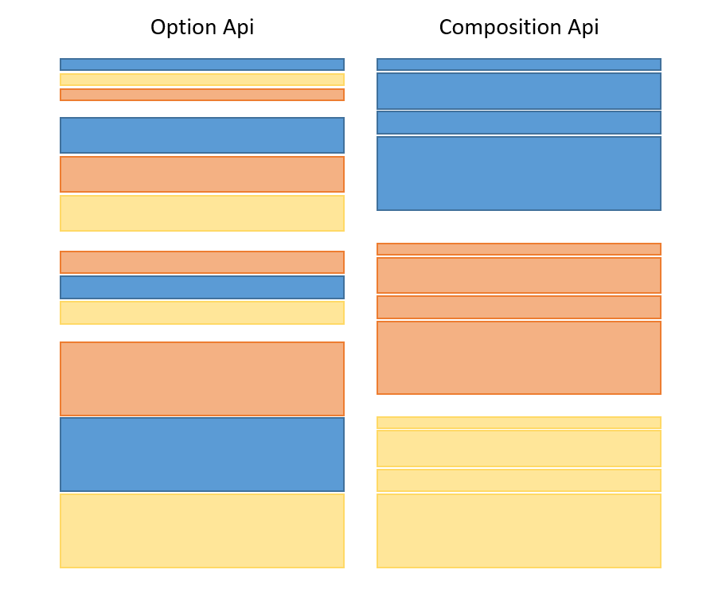
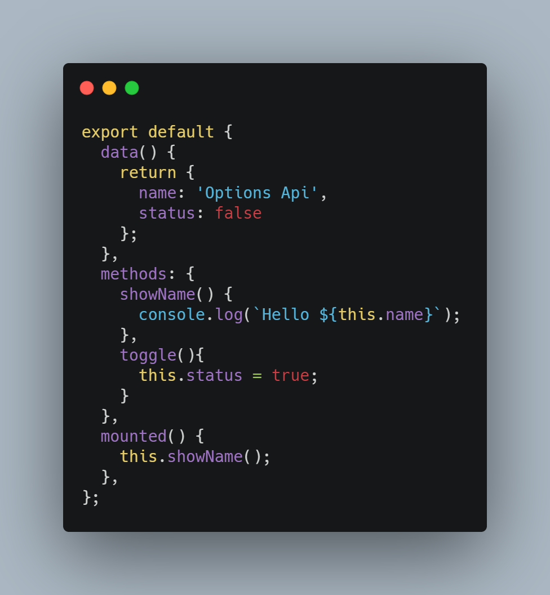
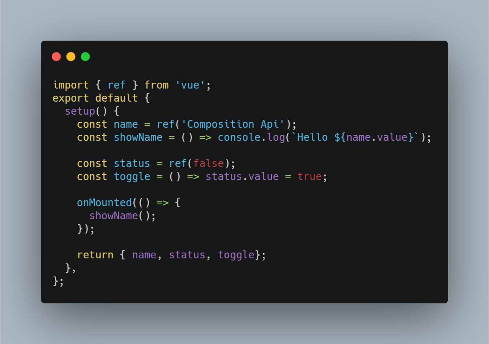

Vue3 Composition API
La API de composición de Vue3 (Composition API) se utiliza principalmente para mejorar la reutilización de la lógica de código en componentes grandes.
Los componentes tradicionales, a medida que la complejidad del negocio aumenta, la cantidad de código crece constantemente, y toda la lógica del código es difícil de leer y comprender.
Vue3 utiliza la API de composición ensetup。
En setup, podemos agrupar parte del código por preocupaciones lógicas, luego extraer fragmentos lógicos y compartir código con otros componentes. Por lo tanto, la API de composición (Composition API) nos permite escribir código más organizado.

Compara los dos fragmentos de código siguientes:1. Componente tradicional

2. API de composición

Componente setup
La función setup() se ejecuta antes de la creación del componente (created()).
La función setup() recibe dos parámetros: props y context.
El primer parámetro, props, es reactivo; cuando se pasa una nueva prop, se actualizará.
El segundo parámetro, context, es un objeto normal de JavaScript, que es un objeto de contexto que expone otros valores que pueden ser útiles en setup.
Nota:En setup, debes evitar usar this, porque no encontrará la instancia del componente. La llamada a setup ocurre antes de que se resuelvan las propiedades data, propiedades computadas o methods, por lo que no se pueden obtener en setup.
El siguiente ejemplo define un contador usando la API de composición:
Ejemplo (src/APP.vue)
<div>
<p>Contador de ejemplo: {{ count }}</p>
<input @click="myFn" type="button" value="Haz clic para sumar 1">
</div>
</template>
<script>
import {ref, onMounted} from 'vue';
export default {
setup(){
// Define una variable con valor inicial 0, hay que usar el método ref para asignarla; si se asigna directamente, el cambio de variable no actualizará la interfaz
let count = ref(0);
// Define el evento de clic myFn
function myFn(){
console.log(count);
count.value += 1;
}
// Cuando el componente se monta, usamos el hook onMounted para registrar algunos mensajes
onMounted(() => console.log('component mounted!'));
// Las variables o métodos definidos con la API de composición están disponibles en la plantilla.
return {count,myFn} // La función devuelta se comporta igual que el método
}
}
</script>
En Vue 3.0, podemos usar una nueva función ref para hacer que cualquier variable reactiva funcione en cualquier lugar, como se muestra a continuación:
import { ref } from 'vue'
let count = ref(0);
ref()La función puede crear un objeto de datos reactivo basado en un valor dado; el valor de retorno es un objeto que contiene solo una.valuepropiedad.
Dentro de la función setup(), los datos reactivos creados por ref() son objetos, por lo que se necesita usar.valuepara acceder a ellos.
Ejemplo
const counter = ref(0)
console.log(counter) // { value: 0 }
console.log(counter.value) // 0
counter.value++
console.log(counter.value) // 1
Ciclos de vida de la API de composición de Vue
En Vue2, implementamos las funciones de ciclo de vida de la siguiente manera:
Ejemplo
beforeMount() {
console.log('V2 beforeMount!')
},
mounted() {
console.log('V2 mounted!')
}
};
En la API de composición de Vue3, implementar funciones de ciclo de vida se puedesetup()usar en la función cononel prefijo de función:
Ejemplo
export default {
setup() {
onBeforeMount(() => {
console.log('V3 beforeMount!');
})
onMounted(() => {
console.log('V3 mounted!');
})
}
};
La siguiente tabla muestra la asignación entre Options API y Composition API, incluido cómo llamar a los ciclos de vida dentro de setup():
| Vue2 Options-based API | Vue Composition API |
|---|---|
| beforeCreate | setup() |
| created | setup() |
| beforeMount | onBeforeMount |
| mounted | onMounted |
| beforeUpdate | onBeforeUpdate |
| updated | onUpdated |
| beforeDestroy | onBeforeUnmount |
| destroyed | onUnmounted |
| errorCaptured | onErrorCaptured |
Debido a que setup se ejecuta alrededor de los ciclos de vida beforeCreate y created, no es necesario definirlos explícitamente. En otras palabras, cualquier código escrito en estos hooks debe escribirse directamente en la función setup.
Estas funciones aceptan una función de devolución de llamada que se ejecutará cuando el hook sea llamado por el componente:
Ejemplo
...
// Cuando el componente se monta, usamos el hook onMounted para registrar algunos mensajes
onMounted(() => console.log('component mounted!'));
...
}
Referencias a plantillas
Al usar la API de composición, los conceptos de referencia reactiva y referencia a plantilla están unificados.
Para obtener una referencia a un elemento o a la instancia de un componente dentro de la plantilla, podemos declarar un ref como de costumbre y devolverlo desde setup():
Ejemplo
<div ref="root">This is a root element</div>
</template>
<script>
import { ref, onMounted } from 'vue'
export default {
setup() {
const root = ref(null)
onMounted(() => {
// El elemento DOM se asignará al ref después del renderizado inicial
console.log(root.value) // <div>This is a root element</div>
})
return {
root
}
}
}
</script>
En el ejemplo anterior, exponemos root en el contexto de renderizado y, mediante ref="root", lo vinculamos al div como su ref.
Los refs utilizados como plantilla se comportan como cualquier otro ref: son reactivos y pueden pasarse (o devolverse) a funciones compuestas.
Uso en v-for
Las referencias a plantillas de la API de composición no tienen un tratamiento especial cuando se usan dentro de v-for. En su lugar, utiliza una referencia de función para realizar un manejo personalizado:
Ejemplo
<div v-for="(item, i) in list" :ref="el => { if (el) divs[i] = el }">
{{ item }}
</div>
</template>
<script>
import { ref, reactive, onBeforeUpdate } from 'vue'
export default {
setup() {
const list = reactive([1, 2, 3])
const divs = ref([])
// Asegúrate de restablecer el ref antes de cada actualización
onBeforeUpdate(() => {
divs.value = []
})
return {
list,
divs
}
}
}
</script>
Observando referencias a plantillas
Observar los cambios en las referencias a plantillas puede reemplazar los ciclos de vida utilizados en los ejemplos anteriores.
Pero una diferencia clave con respecto a los ciclos de vida es que watch() y watchEffect() tienen efectos secundarios si se ejecutan antes de que el DOM se monte o se actualice, por lo que cuando el observador se ejecuta, las referencias a plantillas aún no se han actualizado.
Ejemplo
<div ref="root">This is a root element</div>
</template>
<script>
import { ref, watchEffect } from 'vue'
export default {
setup() {
const root = ref(null)
watchEffect(() => {
// Este efecto secundario se ejecuta antes de la actualización del DOM, por lo tanto, la referencia a la plantilla aún no tiene una referencia al elemento.
console.log(root.value) // => null
})
return {
root
}
}
}
</script>
Por lo tanto, los observadores que usan referencias a plantillas deben definirse con la opción flush: 'post', que ejecutará el efecto secundario después de la actualización del DOM, asegurando que la referencia a la plantilla se mantenga sincronizada con el DOM y haga referencia al elemento correcto.
Ejemplo
<div ref="root">This is a root element</div>
</template>
<script>
import { ref, watchEffect } from 'vue'
export default {
setup() {
const root = ref(null)
watchEffect(() => {
console.log(root.value) // => <div>This is a root element</div>
},
{
flush: 'post'
})
return {
root
}
}
}
</script>
Manual de API
| N.º | API y descripción | Ejemplo |
|---|---|---|
| 1 | setup() Función de entrada de la API de composición de un componente; se llama al instanciarse el componente, y se usa para definir datos reactivos y métodos. | export default { setup() { const count = ref(0); return { count }; } } |
| 2 | ref() Crea una referencia reactiva para envolver tipos primitivos u objetos. | const count = ref(0) |
| 3 | computed() Crea un valor calculado a partir de otros datos reactivos. | const doubledCount = computed(() => count.value * 2) |
| 4 | reactive() Crea un objeto reactivo, adecuado para objetos o arrays. | const state = reactive({ count: 0 }) |
| 5 | readonly() Crea datos reactivos de solo lectura; prohíbe modificarlos. | const state = readonly({ count: 0 }) |
| 6 | watchEffect() Crea un efecto secundario reactivo que rastrea automáticamente las dependencias reactivas relacionadas. | watchEffect(() => { console.log(count.value) }) |
| 7 | watchPostEffect() Efecto secundario que se dispara después de la actualización del DOM. | watchPostEffect(() => { console.log('Post effect') }) |
| 8 | watchSyncEffect() Ejecuta sincrónicamente un efecto secundario cuando cambian las dependencias reactivas. | watchSyncEffect(() => { console.log('Synchronized effect') }) |
| 9 | watch() Se usa para observar cambios en datos reactivos; se pueden especificar datos reactivos o propiedades computadas concretas. | watch(count, (newCount) => { console.log(newCount) }) |
| 10 | onWatcherCleanup() Limpia el observador; se llama cuando los datos observados ya no son necesarios. | watch(count, () => {}, onWatcherCleanup(() => { console.log('cleaned up') })) |
| 11 | isRef() Comprueba si un valor es de tipo reftipo. | isRef(count) |
| 12 | unref() Desenvuelve un refvalor. | unref(count) |
| 13 | toRef() Crea una referencia reactiva extraída de un objeto. | const countRef = toRef(state, 'count') |
| 14 | toValue() Desenvuelve ref 或 reactivevalores de tipo. | toValue(count) |
| 15 | toRefs() Convierte cada propiedad de un objeto reactivo en un ref。 | const { count } = toRefs(state) |
| 16 | isProxy() Comprueba si un objeto es un proxy de Vue. | isProxy(state) |
| 17 | isReactive() Comprueba si un objeto es un objeto reactivo. | isReactive(state) |
| 18 | isReadonly() Comprueba si un objeto es un objeto reactivo de solo lectura. | isReadonly(state) |
| 19 | shallowRef() Crea un ref, haciendo solo reactivas las propiedades del primer nivel del objeto. | const state = shallowRef({ count: 0 }) |
| 20 | triggerRef() Fuerza la activación de refla actualización de. | triggerRef(count) |
| 21 | customRef() Crea una referencia reactiva personalizada que permite al desarrollador personalizar getter y setter. | const count = customRef((track, trigger) => { let value = 0; return { get: () => value, set: (val) => { value = val; trigger() } } }) |
| 22 | shallowReactive() Crea un objeto reactivo superficial, solo las propiedades del primer nivel del objeto son reactivas. | const state = shallowReactive({ count: 0 }) |
| 23 | shallowReadonly() Crea un objeto reactivo de solo lectura superficial, solo las propiedades del primer nivel del objeto son de solo lectura. | const state = shallowReadonly({ count: 0 }) |
| 24 | toRaw() Obtiene el objeto original de un objeto proxy. | const rawState = toRaw(state) |
| 25 | markRaw() Marca el objeto como no proxy; Vue omitirá el procesamiento reactivo de ese objeto. | const obj = markRaw({ count: 0 }) |
| 26 | effectScope() Crea un nuevo effect scope para gestionar efectos secundarios. | const scope = effectScope() |
| 27 | getCurrentScope() Obtiene el effect scope actual. | const scope = getCurrentScope() |
| 28 | onScopeDispose() Ejecuta una función de limpieza cuando se destruye el effect scope. | onScopeDispose(() => { console.log('Scope disposed') }) |
| 29 | onMounted() Ciclo de vida que se llama cuando se completa el montaje del componente. | onMounted(() => { console.log('Component mounted') }) |
| 30 | onUpdated() Ciclo de vida que se llama cuando el componente se actualiza. | onUpdated(() => { console.log('Component updated') }) |
| 31 | onUnmounted() Ciclo de vida que se llama cuando el componente se desmonta. | onUnmounted(() => { console.log('Component unmounted') }) |
| 32 | onBeforeMount() Ciclo de vida que se llama antes del montaje del componente. | onBeforeMount(() => { console.log('Before mount') }) |
| 33 | onBeforeUpdate() Ciclo de vida que se llama antes de la actualización del componente. | onBeforeUpdate(() => { console.log('Before update') }) |
| 34 | onBeforeUnmount() Ciclo de vida que se llama antes del desmontaje del componente. | onBeforeUnmount(() => { console.log('Before unmount') }) |
| 35 | onErrorCaptured() Captura errores no manejados en el árbol de componentes. | onErrorCaptured((err, instance, info) => { console.error(err) }) |
| 36 | onRenderTracked() Hook que se dispara cuando se rastrean datos reactivos durante el renderizado del componente. | onRenderTracked((event) => { console.log(event) }) |
| 37 | onRenderTriggered() Gancho que se activa cuando los datos reactivos cambian durante el renderizado del componente. | onRenderTriggered((event) => { console.log(event) }) |
| 38 | onActivated() Gancho de ciclo de vida que se llama cuando el componente se activa (para keep-alivecomponente). | onActivated(() => { console.log('Component activated') }) |
| 39 | onDeactivated() Gancho de ciclo de vida que se llama cuando el componente se desactiva (para keep-alivecomponente). | onDeactivated(() => { console.log('Component deactivated') }) |
| 40 | onServerPrefetch() Gancho para precargar datos cuando el componente se renderiza en el servidor. | onServerPrefetch(async () => { await fetchData() }) |
| 41 | provide() Pasar dependencias hacia abajo a los componentes descendientes. | provide('key', value) |
| 42 | inject() Inyectar dependencias desde el componente padre o ancestro. | const value = inject('key') |
| 43 | hasInjectionContext() Comprobar si hay un contexto de inyección actual. | hasInjectionContext() |
| 44 | useAttrs() Obtener todos los atributos del componente, incluyendo los atributos HTML pasados al componente. | const attrs = useAttrs() |
| 45 | useSlots() Obtener el contenido de los slots del componente. | const slots = useSlots() |
| 46 | useModel() Obtener el v-modelvalor enlazado del componente actual. | const modelValue = useModel() |
| 47 | useTemplateRef() Obtener la referencia a un elemento en la plantilla. | const templateRef = useTemplateRef('elementId') |
| 48 | useId() Obtener un identificador único. | const uniqueId = useId() |
Haz clic para compartir notas
<p style="font-size:14px;">¡La nota debe ser una extensión del contenido de este artículo!</p><br> <p style="font-size:12px;"><a href="../tougao.html" target="_blank">Para enviar artículos, haz clic aquí</a></p> <p style="font-size:14px;"><a href="../w3cnote/runoob-user-test-intro.html" target="_blank">Cómo obtener el código de invitación para registrarse</a></p> <h3 class="text-muted"><i class="fa fa-info-circle" aria-hidden="true"></i> Antes de compartir notas debes <a href=";.html" class="runoob-pop">iniciar sesión</a>!</h3> <p><a href="../w3cnote/runoob-user-test-intro.html" target="_blank">Cómo obtener el código de invitación para registrarse</a></p>